VIA
The michelin guide 4.0
@EmilienMottet <emilien.mottet@michelin.com>
 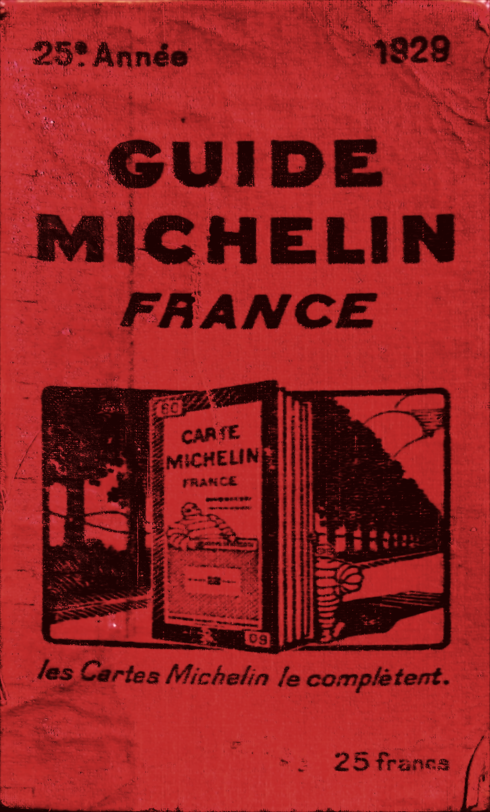
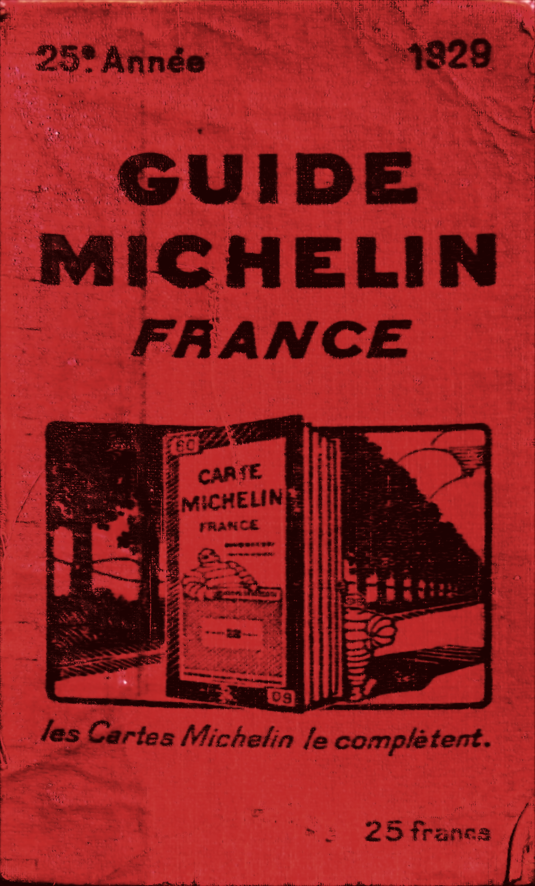
The michelin guide 4.0
My neighbor is my first competitor
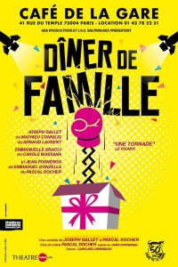
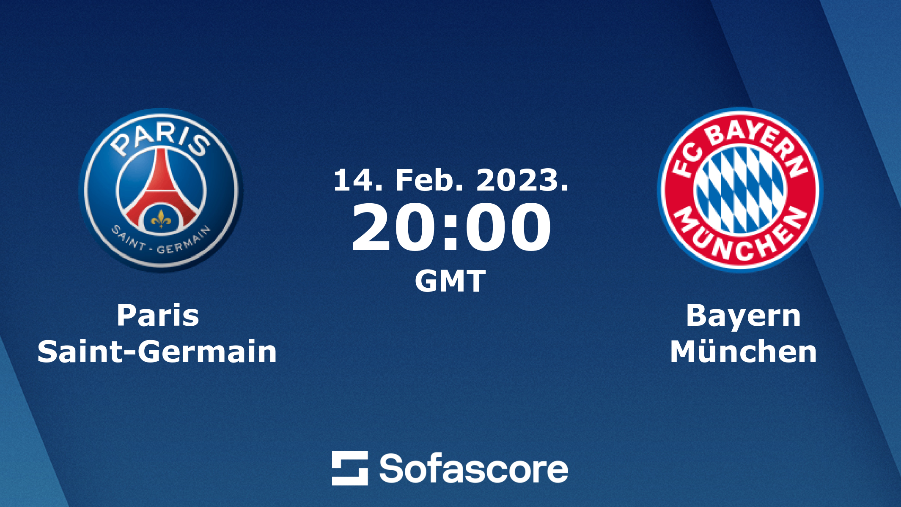
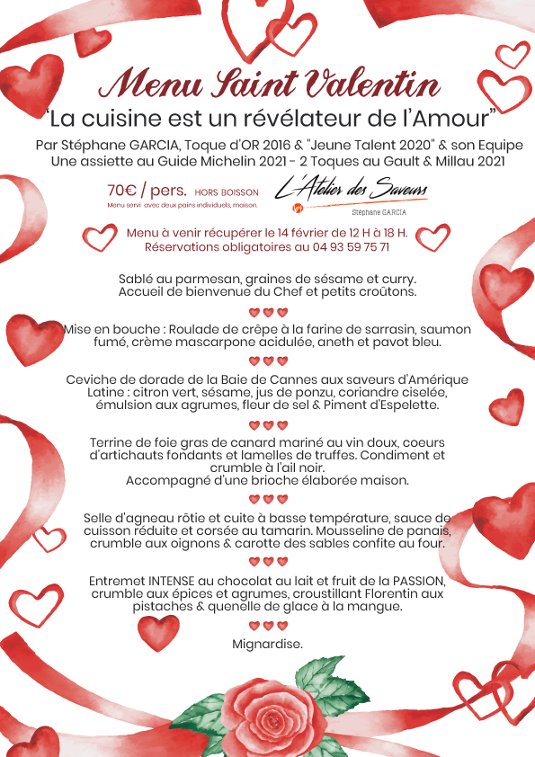
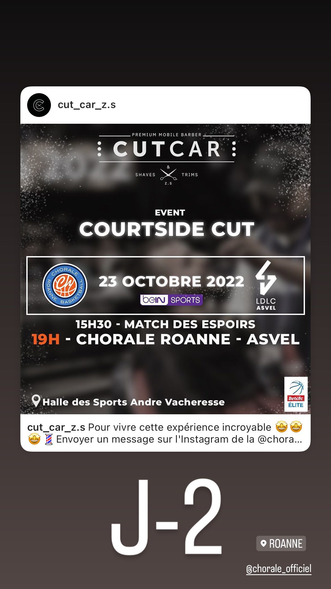
1/10 of the people go to parties
Other :
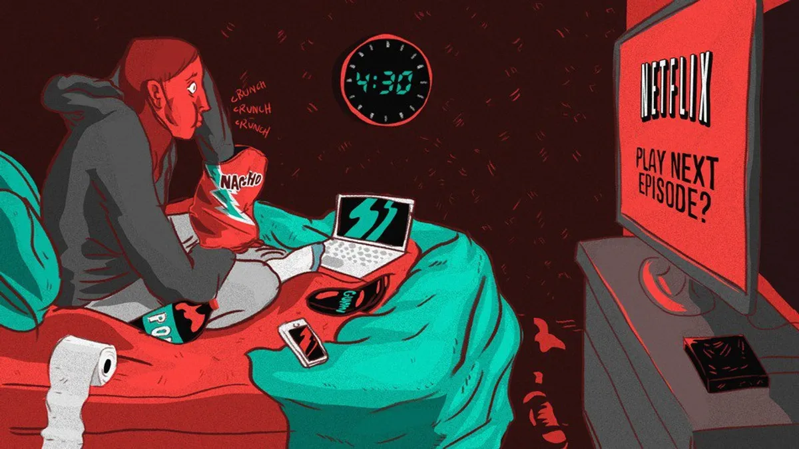
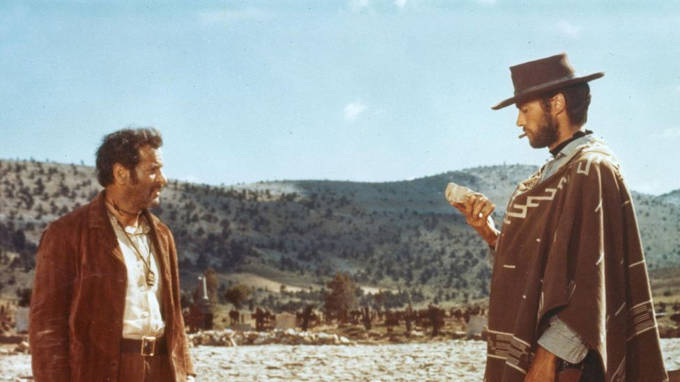
Discover
Feel, Live, Understand, Protect
Play
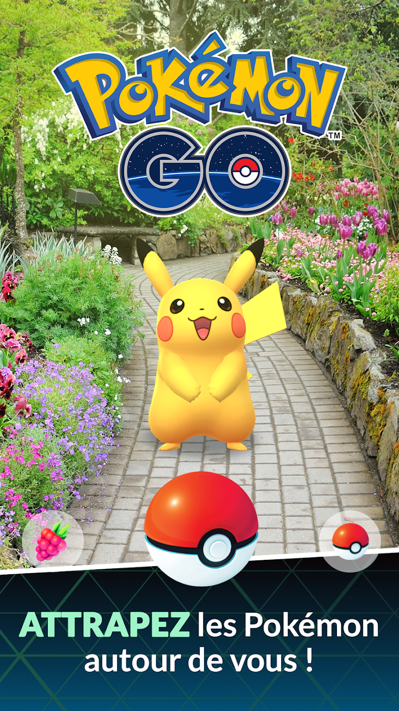
mettre un beau badge venant de figma
badges as rewards
Intéressant,
★
Mérite le détour,
★★
Vaut le voyage
★★★
Pathways
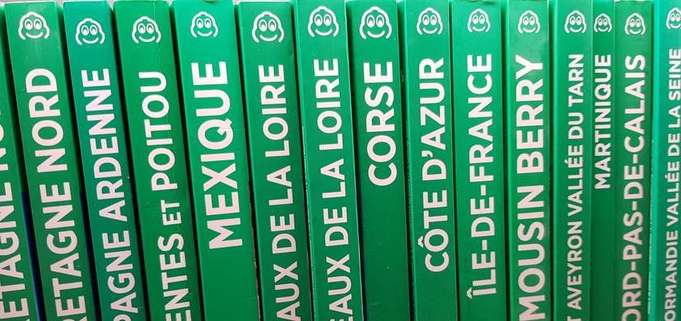
No travel no gain, catch the limited badges
Keep & Share
A virtual memory box
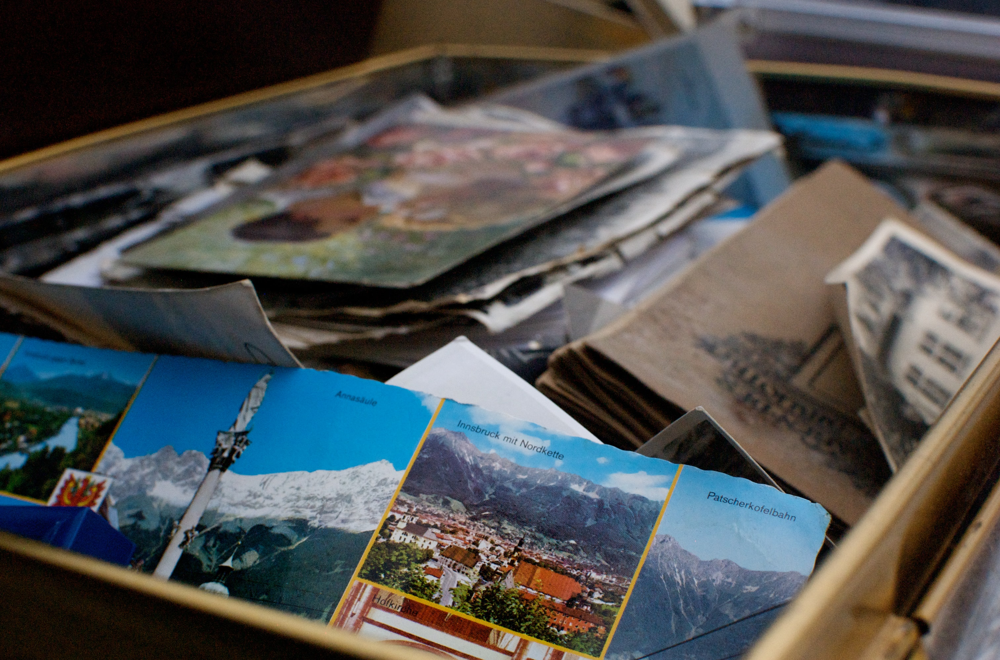
My Playground
Pros pay for :
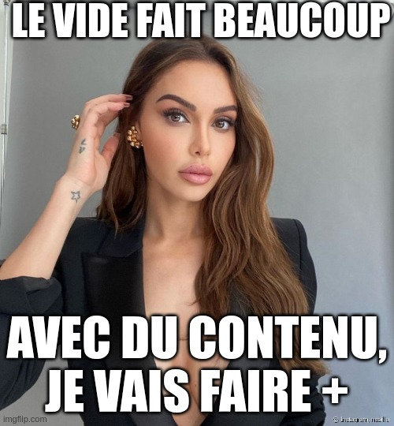
a platform of influence :
- Nabila : 10M €/ year turnover
Ethical business model
Users pay for
- Materialization of badges
- Pay monthly fee for aditionnal features
First step
Build a community
first
500k users
We Michelin
- We have content
- We have developper skills
- We are world wide
- We work for the mobility of humanity
Via
@EmilienMottet <emilien.mottet@michelin.com>
- Infra cost : 0.25 € / user
- Acquisition User cost : 0.2 € / user
- Team cost : 620€ * 200 * 4
- User cost : 0.006 € / user
- User data : 0.0005 € / user
- Sell real objects
Balance at 500k users
MVP 1
- User can collect, share, visualize with app
- Content avaible
- Deploy in region
- 1000 users
 what is the difference with the guide?
what is the difference with the guide?
- the guide sends you somewhere
- with via, you will get something back
I'm Michelin, we are not Google or Facebook
- we are leader on mobility
- the long time
- I bet on emotion and not interest
The difference between interest and emotion
- emotion is personal and individual
- A POI can be popular but not emotional
Get a virtual badge better than "made in china" mug
 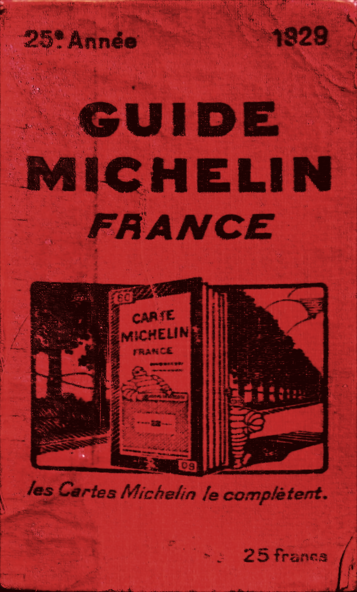
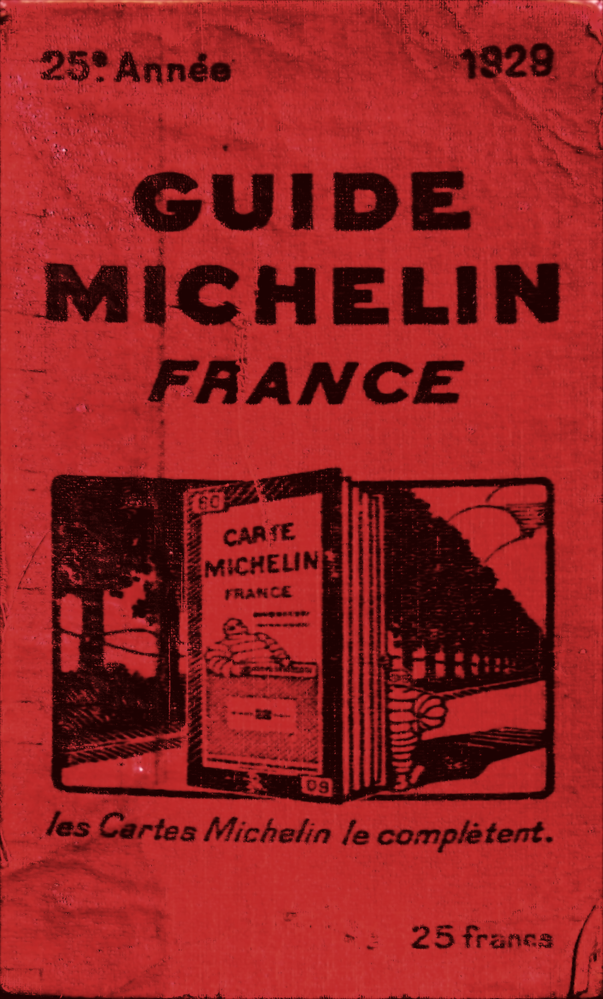